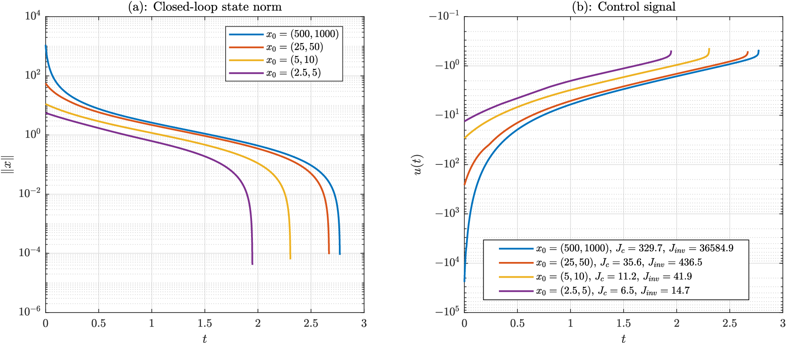
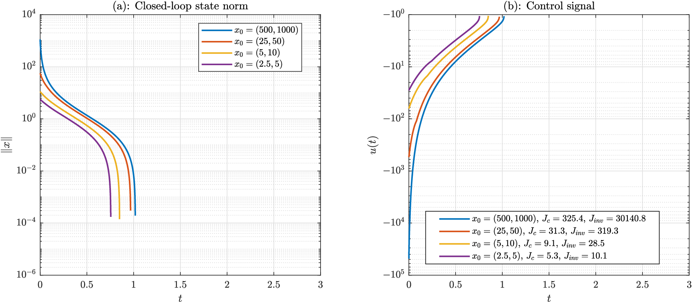

Fixed Time Stabilization of Nonlinear Dynamical Systems
A control Lyapunov framework for fixed-time stabilization of nonlinear systems. Constructs a universal feedback controller for control-affine systems, characterizes its continuity, and establishes inverse optimality for a nonlinear, nonquadratic performance functional.
Fixed-time stabilization · Control Lyapunov functions · Inverse optimality
Abstract
In this paper, we develop a control Lyapunov function framework for fixed time stabilization of nonlinear dynamical systems. First, we present sufficient Lyapunov conditions for fixed time stability of nonlinear autonomous systems on a prescribed domain and establish a converse Lyapunov theorem guaranteeing the existence of a proper Lyapunov function satisfying a new scalar differential inequality. Next, we introduce the notion of a fixed-time control Lyapunov function for controlled nonlinear systems and construct a feedback fixed-time controller for affine in the control systems. In particular, we provide a characterization for a fixed time control Lyapunov function for affine systems that enables the construction of a universal fixed time stabilizing feedback controller and present necessary and sufficient conditions for continuity of the controller. Finally, we show that the proposed feedback control law is inverse optimal with respect to a meaningful nonlinear-nonquadratic performance functional.
Publication pending. The paper link will be available soon after the conference presentation.



